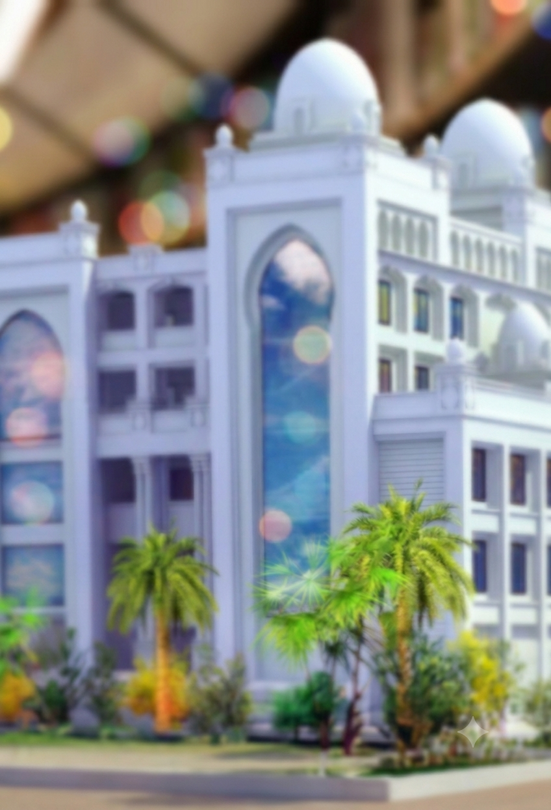
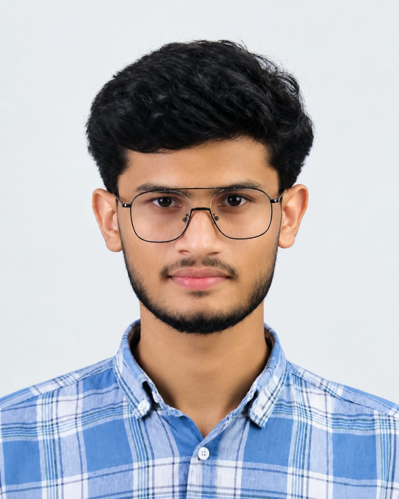

01
Completed
Bachelor of Arts in English
Undergraduate degree establishing mastery in literary critique, communicative rhetoric, academic writing, and stylistic analysis.
Enthusiastic graduate and postgraduate researcher synthesizing classical language studies with contemporary Artificial Intelligence. Advancing fluency across English, Arabic, Turkish, and Urdu while engineering AI-assisted digital workflows.

Background & Purpose
"Connecting the depth of classical literature and spirituality with the frontier of Artificial Intelligence."
I have completed my BA in English and am currently pursuing postgraduate Islamic studies at Fath-hul Fathah Islamic College in Athipatta, Valanchery, focusing on Tasavvuf under the guidance of Athipatta Usthad.
I have also begun an MA in English, building further on the language, literature and communication foundation from my BA. My passions span public speaking, translation, research, and emerging AI tools.
Long-term Goal: Build a distinguished career as an IT professional specializing in Artificial Intelligence.
English · Arabic · Turkish · Urdu with structured LSRW pedagogy.
4-time speech 1st prize winner, academic debate & rhetoric.
AI Video creation, Tally Essential, MS Office & web basics.
English Club Chairman · LSRW WhatsApp learning circle.
Linguistics
Core degree foundation, academic analysis, and daily research communication.
Classical Islamic studies, Risala research, translation, and speech competition.
Attained through dedicated study with a native Turkish educator from Türkiye.
Peer study, literary readings, and LSRW WhatsApp student community practice.
Academic Track
Undergraduate degree establishing mastery in literary critique, communicative rhetoric, academic writing, and stylistic analysis.
Advanced postgraduate Islamic studies and Risala research with deep grounding in Tasavvuf (spiritual purification) under Athipatta Usthad.
Pursuing a postgraduate degree in English language and literature, deepening my study of literary analysis, linguistics, and academic writing on the foundation of my BA.
Capabilities
Practical oratory and translation, paired with four languages at various progressive benchmarks.
Certified operational accounting and rapid document handling with high typing accuracy.
Hands-on experimentation with text-to-video, prompt engineering, and digital workflows.
Applied Work
An innovative experimental project exploring prompt engineering, neural motion coherence, and generative video pipelines to streamline modern digital narratives.
Academic dissertations, presentations, and rhetorical analyses developed during BA English studies.
Classical treatise manuscript and source validation conducted as part of postgraduate Islamic studies.
Contrastive syntactic exercises and bilingual vocabulary mapping developed with native Turkish mentorship.
Daily collaborative peer network for students practicing English, Arabic, and Urdu.
High-accuracy data entry, verified ledger reconciliation, and fast keyboard output benchmarks.
Visual Chronicle




Milestones
Four-time champion in college-level Arabic public speaking competitions.
Maintained top decile academic performance across examinations.
Honored with distinctions in intercollegiate literary and debate activities.
Certified Turkish study completed with native instructor from Türkiye.
Leadership
College Students' Union
Facilitating public speech clinics, literary seminars, and communicative forums.LSRW Peer Acquisition Architecture
Organized a collaborative WhatsApp community for students acquiring English, Arabic, and Urdu following natural cognitive acquisition:
Next Chapter
Currently expanding in AI tools, neural video production, and digital architecture, aiming for an impactful career as an IT professional specializing in AI.
Contact
Open to academic research, language initiatives, AI project explorations, and technology opportunities.
Field